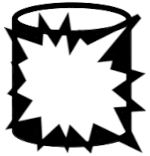

Intro to Olis
Olis is a graph management application. Its job is to help administrators of Knowledge Graphs manage them as a series of sub-graphs.
Olis uses the Olis Ontology as its data model.
Opposite of Silo
Olis, "Silo", reversed!, is the opposite of a Data Silo as Olis is designed to manage data in its most reusable form - a strongly defined, open standards-based, dataset. There are as few barriers as we can think of to getting data in and out of an Olis-based system, and even moving away from an Olis-managed dataset entirely.
Olis does things to ensure you are completely in control of your data and not locked in my it:
- Contains Schema in the data
- Olis manages data that contains its schemas within it, not somewhere else that can only be accessed through special tools
- Administrative & configuration data used by Olis is just more data in the same dataset and is accessible in the same way
- Strongly defined
- All the parts of data managed by Olis - objects, their relations, class definitions - are defined in an open standards way, so no data elements have meaning or roles that are implicit or hidden and that can be misunderstood
- Uses Standardised IO protocols
- All data within an Olis-managed dataset can be accessed via the SPARQL series of data standards, which includes not only a query language but protocols for lodging queries, receiving responses and dumping all data
How it works
Data in a Knowledge Graph can be segmented into sub-graphs in a manner similar to the way in which schemas in some relational database systems can segment data. Multiple graphs can then be used together to form the total Knowledge Graph but managed separately, if required.
Olis provides a model and an API for managing Knowledge Graph sub-graphs. The Olis data model defines:
- Real Graphs
- Knowledge Graph sub-graphs that contain data
- Virtual Graphs
- Knowledge Graph sub-graphs that are aliases for other Real and Virtual graphs and contain none of their own data
Using the Olis API, you can make Virtual Graphs for complex datasets that consist of potentially very many Real Graphs and other Virtual Graphs that segment the dataset's data by time or some other dimension.
Example
A data stream supplies new data to a Knowledge Graph every day.
Olis can be used to define a Virtual Graph for that stream and a Real Graph is created for incoming data each week.
Data reprocessing or reasoning can be performed on weekly Real Graph 'chunks', rather than the whole dataset.
How I get it
Olis is currently in pre-Alpha testing with a limited number of implementers now (September 2022). Please contact Kurrawong AI if you want in!
Status
| Date | Status |
|---|---|
| December 2023 | Ontology publication |
| November 2023 | API re-implementation using SPARQL grammar |
| September 2022 | Pre-Alpha testing |
| November 2022 | Expected Alpha release |